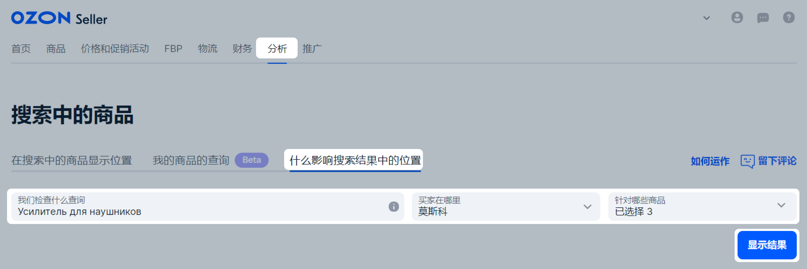
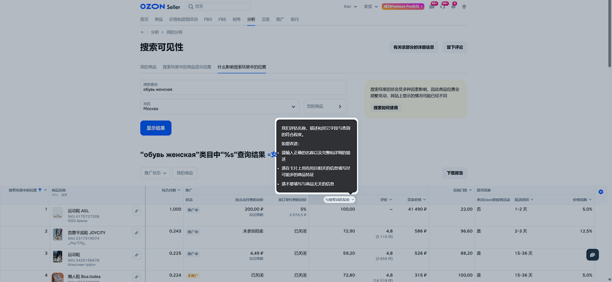
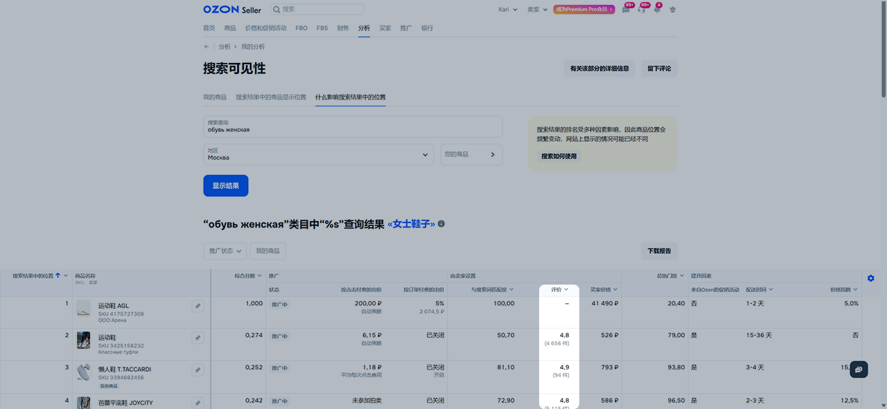
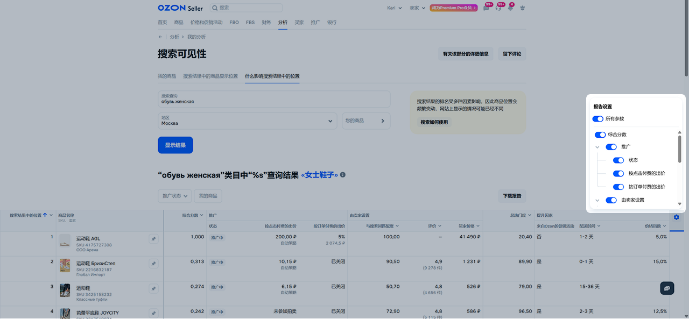
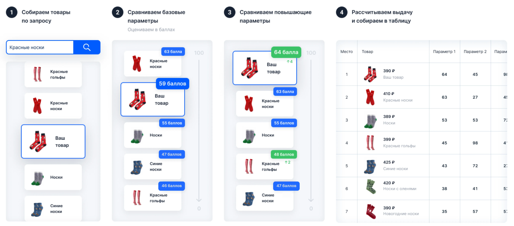
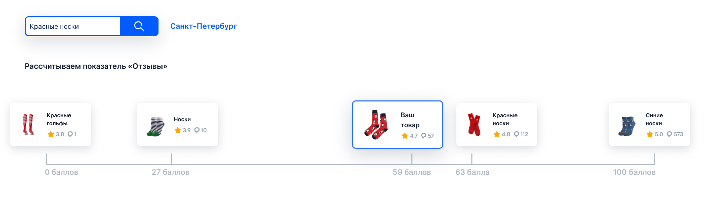

有了“什么影响搜索结果中的位置”工具，您可以对搜索中的商品进行分析，并且了解为什么报价位于这样或那样的位置。
该工具可以帮助您：
查看所选区域的买家如何看到搜索结果——商品在搜索中以怎样的顺序展示，以及它们带有什么样的照片和描述；
了解哪些因素会影响搜索结果中的位置；
查看排名靠前商品的参数；
将自己的商品与其他卖家的商品进行比较；
评估具有哪些参数、位于哪些区域的商品占据良好的位置；
了解如何优化商品卡片，以便它被更多的买家看到。
查看搜索中的商品的分析数据
进入 分析 → 搜索中的商品 → 什么影响搜索结果中的位置 板块。
输入您想要查看的搜索查询。
选择买家所在城市或区域。 这里考虑的是买家在设置中指出的位置或系统自动确认的位置。
指出需要在搜索中显示多少件商品。
检查参数并点击 显示结果 。

您面前将打开简短的搜索分析和根据该搜索查询出现的商品列表。
对于“您的商品数量”这一参数，仅对比您的商品；其他参数则是将您的商品与您在 显示多少件商品 字段中所选样本中的其他卖家商品进行比较。
参数 |
描述 |
|---|---|
您的商品数量 |
您的商品数量：
|
符合请求 |
名称、描述和其他字段与搜索查询的符合程度。商品越符合搜索短语，它获得的分数就越多。
|
搜索结果中的推广 |
有多少件商品启用了
付费推广
。
|
商品评级 |
我们为您显示下列商品的评分：
|
促销活动 |
有多少件商品参加Ozon促销活动。比如“折扣马拉松”，“双十一”和“黑色星期五”。
|
搜索中的商品表格
在每个商品的表格中都将显示以下信息：
搜索可见性；
商品简短描述：照片、名称、标识符以及店铺名称；
推广信息：通过哪个工具推广商品，使用了什么样的出价和付费模式；
所有影响搜索结果的指标的最终评分；
用于对比的指标。
您可以：
查看每个参数下商品在搜索结果中的评分。将鼠标悬停在参数名称上可查看提示说明。

为便于查看，参数按含义分组。例如，“评价”包括评分和评论数量。

设置表格中要显示哪些参数。
启用推广功能。
如果填写了 针对哪些商品 字段，可下载 Excel 格式的报告。报告可包含所选商品，也可不包含。

参数如何计算
表格中的参数通过多个阶段生成：
寻找在下列方面与搜索查询有相符之处的商品：
在名称中；
在搜索中；
在其他字段中。
系统会挑选出最合适的 —— 即与查询文本最接近的内容。
接下来计算 基础参数 ，根据这些参数得出总评分和搜索结果排名。
系统会检查商品的 提升因素 — 这些因素不是必需的，但它们能提升商品的综合评分和排名。 如果商品具备提升因素，系统会将综合评分乘以相应的系数，从而得到商品的有机相关性评分。
商品会根据付费推广的出价进行排序。

基本参数
对符合搜索关键词的商品，系统会计算其参数值。 将所得出的数值进行对比，这样商品将以分数的形式被评估：
参数值最高的商品得100分；
指标最低的商品获得0分；
针对其他商品，算法将对比每件商品获得的从0到100的等级来为其分配分数。

表格中每个参数会显示：
评分（分值）——商品与标准的匹配程度；
权重——此参数对排名计算的影响程度。
评分是针对每个搜索请求分别计算的——拥有相同参数的商品，其得分可能不同。
得分不会相加。如想让商品在搜索结果中排名更高，优先优化权重最高的参数。
参数分为以下两类：
基础参数：您可以自行设置；
不可直接修改的参数：系统会根据基础参数自动计算。
参数 |
描述 |
|---|---|
与搜索查询匹配度 |
评估商品名称、描述及其他字段与搜索查询的匹配程度。匹配度越高，商品获得的分数越多。 |
评价 |
显示平均评分和评价数量。
|
价格 |
显示买家看到的折后价格以及商品在该参数下获得的分数。价格变化会影响商品在搜索结果中的最终排名。
|
总热门度 |
评估商品被浏览、下单、加入购物车、收藏和加入对比的频率。商品对该搜索词越受欢迎，得分越高。
|
提升因素
提升因素会额外提升商品在搜索结果中的排名。 它们不是必填项：您可以自行决定是否使用。
每个参数都有自己的系数，商品的综合分数要乘以它来确定在搜索中的最终位置。
系数取决于您的发货国家。
参数 |
提升幅度 |
描述 |
|---|---|---|
促销活动 |
取决于活动类型 |
商品参与 Ozon 的促销活动。推广系数可能因活动类型而异，我们会在促销条件中注明。 |
配送时间 |
取决于配送速度：
|
若能在1–2天内送达，商品将在搜索结果中排名更靠前。配送时间越长，排名越低。 |
价格指数 |
取决于指数数值：
|
反映您商品的价格对买家的吸引力。我们将您的价格与竞争对手及其他平台进行比较。 |
付费推广
除了商品的有机相关性评分外，付费推广也会影响搜索结果中的商品排名。
最终商品的排列顺序根据以下公式进行：最终评分 = 有机权重 × 有机评分 + 推广权重 × 推广评分。
公式中的变量：
有机评分 —— 上一阶段获得的商品有机相关性评分；
推广评分 —— 在所有付费推广形式下展示商品的费用评分。每次点击或下单的出价越高，该指标越高。如果商品没有参与付费推广， 推广评分 等于零。
有机权重和推广权重 ——调节系数，用于支持搜索结果的质量和竞争性。
推广评分 不仅取决于出价，还取决于商品的转化率。它的计算公式如下：推广评分 = 商品点击概率 × 点击推广出价 + 下单概率 × 下单出价。
这保证了商品在搜索结果中的相关性——不仅仅是推广出价的高低重要，商品与买家的互动概率同样重要。
对表格中商品操作方面的建议
表格中的商品顺序可能与网站上的顺序不同。 影响搜索结果的参数有多个，因此同一城市的买家在同一时间会看到不同的搜索结果。
将商品固定在第一行中
如果您的商品没有进入搜索结果前列，可将其固定在顶部并与竞品进行比较：
前往 分析 → 搜索结果中的商品 → 什么影响搜索结果中的位置 ，填写参数并等待表格加载。
点击所需商品名称旁边的 图标。该商品行将固定在表格顶部。
如需取消固定，再次点击 图标。
如果您的报价不在表格中，请分析搜索结果最前排商品的参数。
不要对比不同时间的分数
买家每次寻找商品时，算法都会重新计算商品的位置。因此表格中的数据经常变化。 工具显示的是表格加载时的情况。
示例
您的商品在“与搜索词匹配度”参数上得分较低。 您已经更新了商品卡片， 内容评级 提高了，但分析中的该参数分值却下降了。
这是因为在您修改商品期间，其他卖家可能优化了自己的参数，或重新上架了具有优秀参数的商品。
不要叠加参数值
每个参数在搜索结果中都有自己的权重。 比如，评价的40分对位置的影响要比销售的40分低。
使用提升因素
可用的提升因素取决于您销售商品所在的国家。
请使用 提升因素 来提升商品在搜索结果中的排名：开启本地仓库发货、启用快速配送，或将商品加入促销活动。请注意，其他卖家也会使用提升因素。
工具使用常见问题解答
如何计算评分？
系统会比较所有在某次搜索查询中被展示的商品的参数：参数最优的商品获得100分；参数最差的商品得0分。其他商品的得分根据其值在 0–100 分的区间中计算得出。
为了提高得分，我们建议改进较低的指标。将鼠标悬停在参数名称上可查看改进建议。
为什么有些参数标注“搜索结果中的权重”，有些标注“提升”？
搜索结果中的权重 ：适用于基础参数，这些参数构成了综合评分和搜索结果排名。 提升 由可选的提升因素提供，这些因素会提高商品的排名和综合评分。
为什么商品已在 Ozon 上架，但表格中看不到？
可能原因如下：
商品排名在表格展示范围之外，例如：您查看的是前10名，而您的商品排在第13；
您的搜索查询或查看区域与商品相关性较低。
为什么不同参数的商品得分一样？为什么相同参数的商品得分不同？
这不是错误，而是评分机制的特性。 例如在 价格 参数中，1分不等于1卢布，而是指一个价格区间。该区间会针对每个搜索查询单独计算。若两个价格不同的商品都落在同一区间，它们就会获得相同分数。